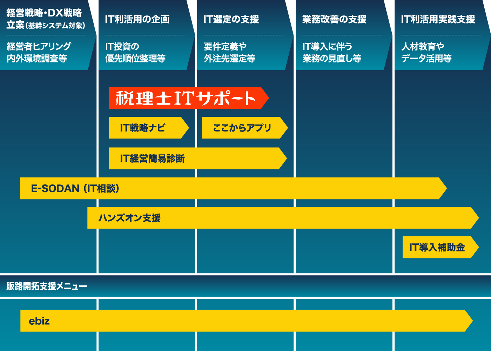

About this website
このサイトについて
開設の背景と目的
独立行政法人中小企業基盤整備機構では、生産性向上に取組む中小企業・小規模事業者の皆様に、「ここからアプリ」をはじめとするIT導入検討ツールや、専門家派遣など実際のご支援メニュー、事業者のIT導入事例、IT実装のための補助金活用などについて、「ITプラットフォーム」と呼ばれるサイト群を通じて、2019年３月より広く情報発信を行っており、広くご活用いただいております。
この度、中小企業・小規模事業者の身近な相談相手としてご活躍される税理士の皆様に、「ITプラットフォーム」をより有効に、顧問先や税理士の皆様にとっての「IT情報パートナー」としてご活用いただくために「税理士ITサポート」を開設いたしました。
税理士の皆様からのご要望、ご指摘も踏まえ、特に必要とされるであろう情報の発信やコンテンツを集約して構成した税理士向けIT情報サイトです。
中小企業・小規模事業者のIT化支援の際に、また会計業務において有用なIT情報をお探しの際に、当サイトをご活用いただけますと幸いです。
ITプラットフォームにおける『税理士ITサポート』の位置づけ

中小機構「ITプラットホーム」のIT支援ツール一覧（https://dx-ouen.smrj.go.jp/）
画像クリックで拡大
 メールマガジンに登録しよう！
メールマガジンに登録しよう！